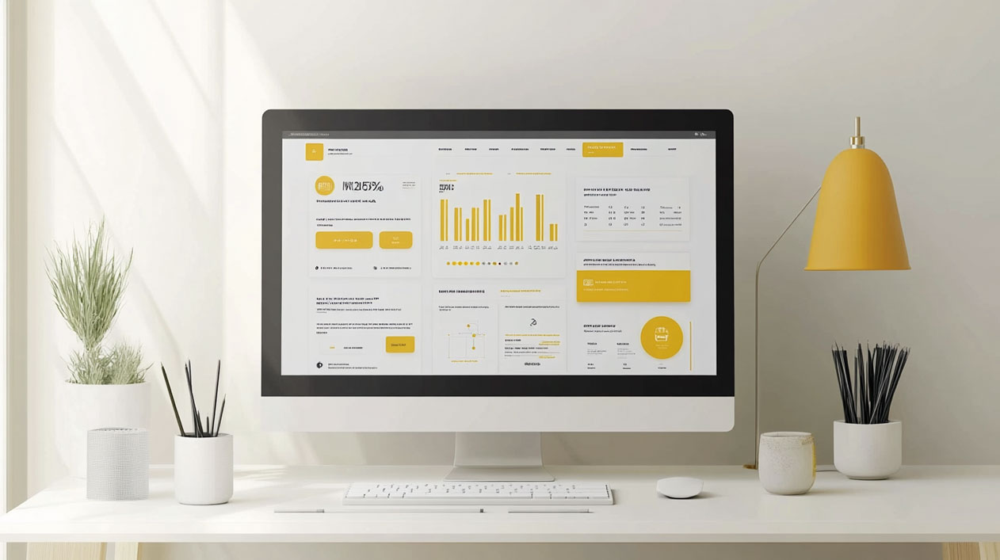

Introduction to the Meaning and Purpose of UI Design

UI design, or user interface design, refers to the process of creating the visual and interactive elements of a product or service. This includes everything that users see and interact with, such as buttons, menus, icons, and overall layout. According to a 2023 Forrester Research study, companies that invest in good UI design see a return on investment of up to 9,900%.
Quick Insight: The difference between UI and UX design often confuses beginners. While UI design focuses on the visual and interactive elements users engage with directly, UX design encompasses the entire user journey, including research, testing, and overall satisfaction. Think of UI as the "look and feel" while UX is the complete journey.
The purpose of user interface design is to develop user-friendly and effective interfaces that make it simple for customers to use a product or service. Research by Google shows that users form design opinions within 50 milliseconds of viewing an interface, highlighting the critical importance of first impressions in UI design.
The Business Impact of UI Design
Since UI design has a significant impact on how customers interact with a product or service, it is essential for creating positive user experiences. Consider these key metrics:
- A 100-millisecond delay in load time can result in a 1% loss in sales
- 88% of users are less likely to return after a bad experience
- Good design increases brand credibility by 75%
- Companies that conduct user testing see conversion rates increase by up to 400%
What does user interface design do?

The primary purpose of UI design is to create intuitive and efficient interfaces for users. According to the Nielsen Norman Group, users spend an average of 57% of their time above the fold on websites, emphasizing the importance of strategic element placement.
Professional UI Design Tools and Resources
Modern UI designers rely on a variety of industry-standard tools:
- Figma (67% market share in 2024)
- Adobe XD (Popular among Adobe Suite users)
- Sketch (32% of Mac users)
- Prototyping tools: InVision, Protopie
- Collaboration tools: Miro, Zeplin
Investment Insight: Professional UI design costs vary by project scope:
- Basic website UI: $5,000-$15,000
- Mobile app UI: $10,000-$50,000
- Enterprise systems: $50,000+
- Hourly rates: $50-$250
The Elements of UI Design
Key components include:
Layout and navigation
- Studies show consistent navigation improves task completion rates by 37%
- F-pattern and Z-pattern reading behaviours influence optimal layout design
- Mobile interfaces require special consideration for touch targets (minimum 44x44 pixels)
Colours and typography
- Color increases brand recognition by up to 80%
- 95% of top brands use only 2-3 colors in their logos and interfaces
- Typography choices can affect reading speed by up to 13%
Images and visual design
- Posts with images receive 94% more views
- Interactive elements with icons have a 34% higher click-through rate
- Visual hierarchy influences user decision-making within 2.6 seconds
Feedback and interaction
- Users expect load times under 2 seconds
- Haptic feedback improves mobile task completion rates by 25%
- Micro-interactions increase engagement by 37%
Best practices for UI design
Research-backed strategies:
Visual Hierarchy and Layout
- Clear hierarchy increases content findability by 47%
- Using whitespace around text improves comprehension by 20%
- Strategic button placement can increase click-through rates by 35%
Consistency and Design Systems
- Consistent UI elements reduce user errors by 37%
- Design systems speed up development time by 50%
- Brand recognition improves by 80% with consistent visual elements
Interactive Elements
- Properly sized touch targets reduce error rates by 45%
- Visual feedback on interactions improves user confidence by 89%
- Hover states increase clickthrough rates by 28%
Performance and Response
- Animations under 400ms feel most natural to users
- Interface responses within 100ms feel instantaneous
- Smooth transitions improve user satisfaction by 32%
Implementation Guidelines:
- Maintain padding ratios of 8px or 16px for visual harmony
- Use no more than 3 primary typefaces
- Keep color palette limited to 2-3 primary colors with 2-3 accent colors
- Ensure interactive elements are at least 44x44px on mobile
- Maintain contrast ratios of at least 4.5:1 for text readability
These UI-specific best practices focus on the visual and interactive elements that directly impact user interaction with the interface, rather than the broader UX research process.
Current Trends and Future Outlook
UI design continues to evolve with technological advances. Recent trends show:
- 73% increase in gesture-based interfaces
- 48% growth in voice user interfaces
- 89% of companies compete primarily on customer experience
- Dark mode interfaces adopted by 82% of mobile apps
- Accessibility-first design becoming a legal requirement in many regions
The future of UI design will likely be shaped by emerging technologies like augmented reality and artificial intelligence, with the global UI design tools market expected to reach $84.1 billion by 2025.
Success Metrics in UI Design
A successful UI design can be measured through:
Quantitative Metrics:
- Task completion rate: >85%
- Time on task: 25% reduction
- Error rate: <1%
Business Impact:
- Conversion rate increase: 10-25%
- Support ticket reduction: >30%
- User retention improvement: >40%
User Satisfaction:
- CSAT scores: >80%
- Net Promoter Score improvement: >20%
Further Reading & References
Key Resources to Explore
When continuing your UI design education, consider researching these topics through official channels:
- Nielsen Norman Group's Articles on UI Design - (opens in a new tab)
- Material Design Guidelines - (opens in a new tab)
- Apple Human Interface Guidelines - (opens in a new tab)
- Microsoft's Fluent Design System - (opens in a new tab)
Industry Publications
These organizations regularly publish UI design research and guidelines:
- Smashing Magazine - (opens in a new tab)
- A List Apart - (opens in a new tab)
- UX Planet - (opens in a new tab)
- InVision Blog - (opens in a new tab)
- Dribbble Blog - (opens in a new tab)
Professional Communities
Connect with other UI designers through:
- Behance - (opens in a new tab)
- Dribbble - (opens in a new tab)
- UI/UX Community on LinkedIn - (opens in a new tab)
- Designer News - (opens in a new tab)
- Design Systems Community - (opens in a new tab)
Note: Access these resources by visiting their official websites or through professional design networks.